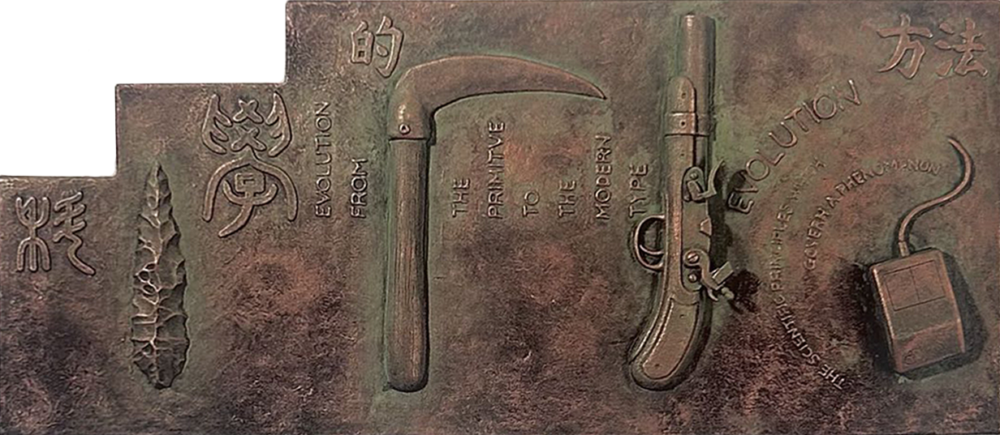

디자인에 대한 나의 생각
안녕하세요?
[디자인에 대한 나의 생각] 페이지 방문을 환영합니다.
디자인이란, 무엇일까요.
'디자인'이란..
우리 학생들이 자꾸 생각하게 되는 주제지요.
요즘 드는 제 생각으로 디자인이란, 우리 인류들의 진화에 있어 선택방식이라 할 수 있을 것 같습니다.
왜냐면..
도구는 인류의 진화와 함께 발견이 되기도 하고, 디자인 되어왔죠.
우리 인류는 계속해서 도구와 함께 진화해왔기 때문입니다.
- 오스트랄로피테쿠스:
- 석기
- 호모 에렉투스:
- 불
- 호모 네안데르탈:
- 철기
- 호모 사피엔스:
- 더욱 정교한 도구의 발전..~
- 우리의 시대:
- A.I.

그렇다면..
우리가 이 학교에서 시각디자인을 배운다는것은, 기술 그 중에서도 시각적 효과를 통한 진화의 실천 아닐까요
목차..
- 디자인적 가치관
- 디자인에서 중요한것
- 내가 디자인으로 이루고픈 것들
■ 1. 디자인적 가치관 ■
카오스에서 코스모스로그로써는 나에게 좋은것 이전에 인류에게 좋은것을 고민해야한다고 생각합니다.
■ 2. 디자인에서 중요한것 ■
결과가 본래 의도와 통일성 있게 받아들여지는가?아무리 과정에서 나름의 고군분투가 있었어도, 그 사이 중심을 놓쳐 결과적으로 의도는 흐려져버리기가 쉽습니다.
요즘 이런 면에서 균형을 맞추지 못해 상실감을 느끼곤 합니다...
그럼에도 그렇게 헤맨 길들 조차 언젠가 더 나은 결과물의 지표가 되어주리라 믿으며 한걸음 나아가보겠습니다
■ 3. 내가 디자인으로 이루고픈 것들 ■
| 연차 | 계열 | 비고 |
|---|---|---|
| 1년 차 | 편집/웹/그래픽/vfx | 바이브코딩 등 이용하여 커리어활동 두루 하며 자금 모으기 |
| 2년 차 | 세계 여행 및 유학 | 인사이트 확보 |
| 3년 차 | 브랜딩 및 비주얼 디렉터 | 학기 중 |
| 4년 차 | ||
| 5년 차 | 창업 | |
| 10년 차 | tod 강연 |